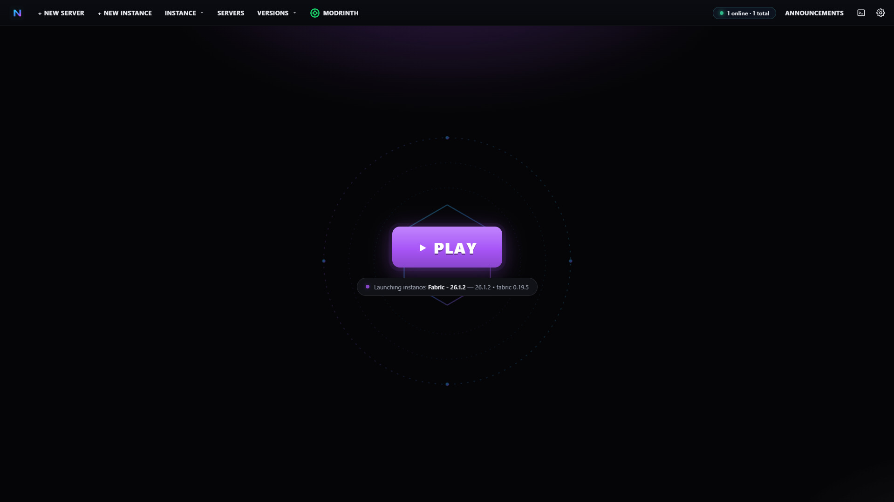
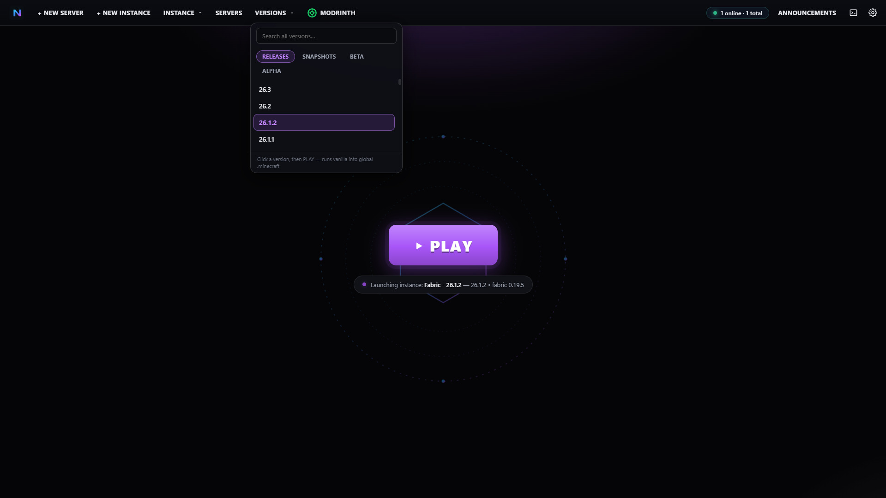
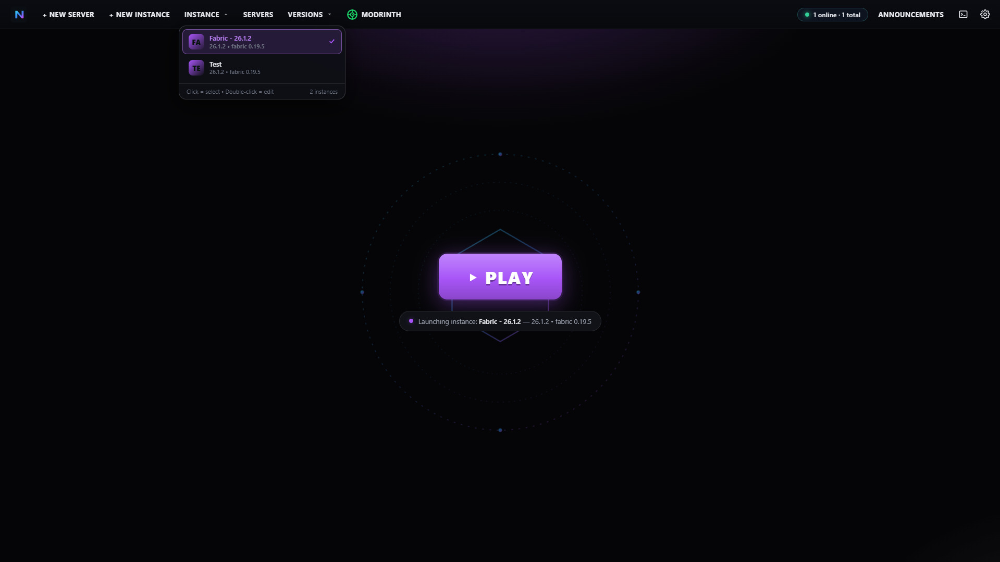
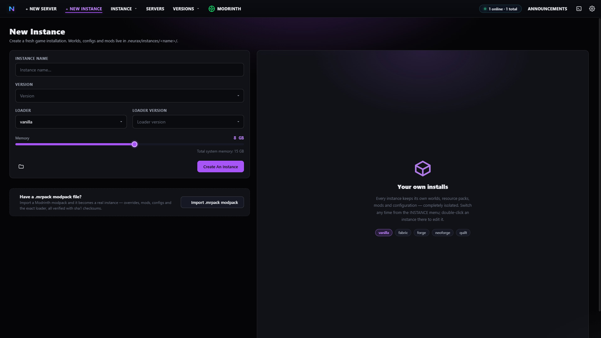
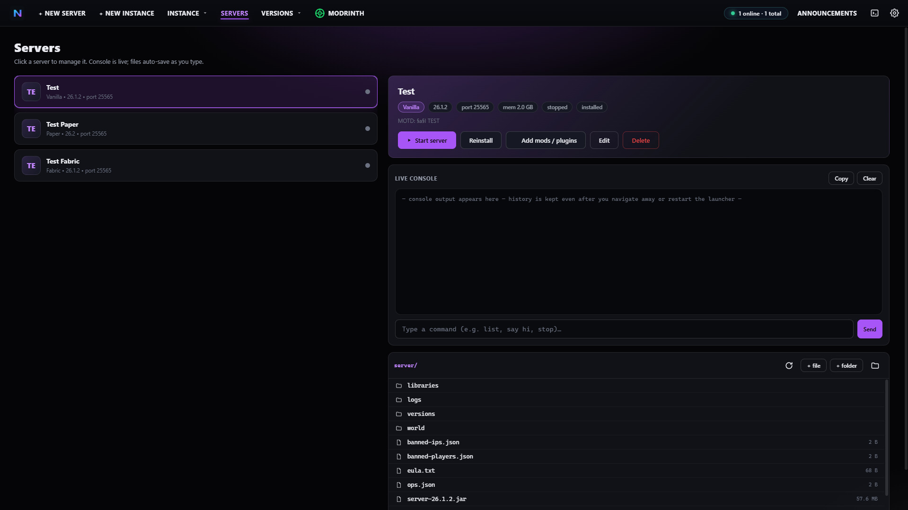
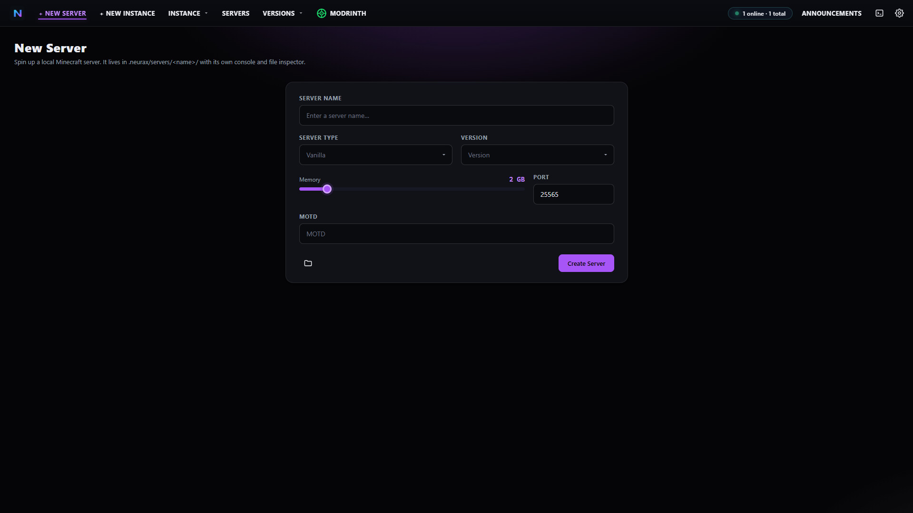
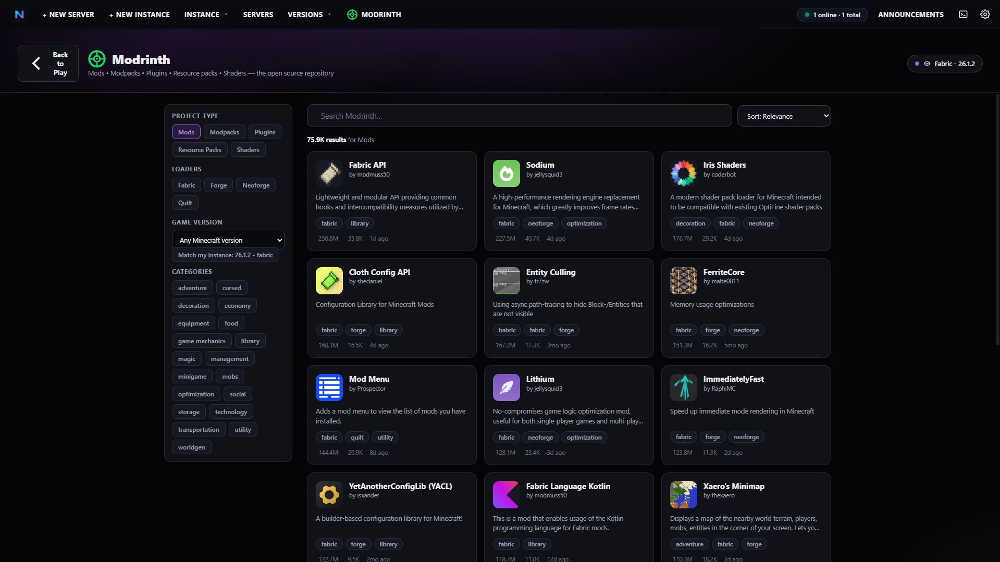
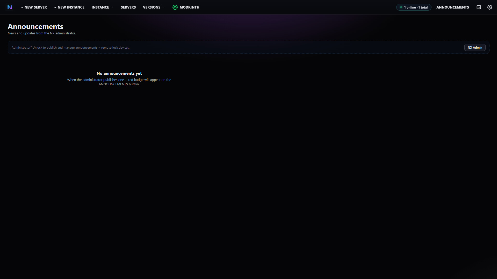
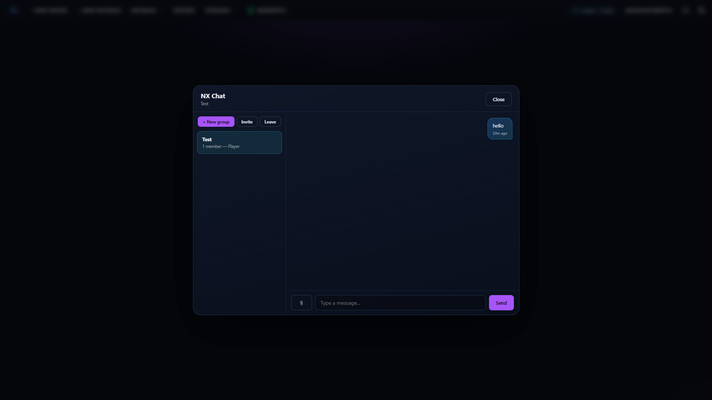
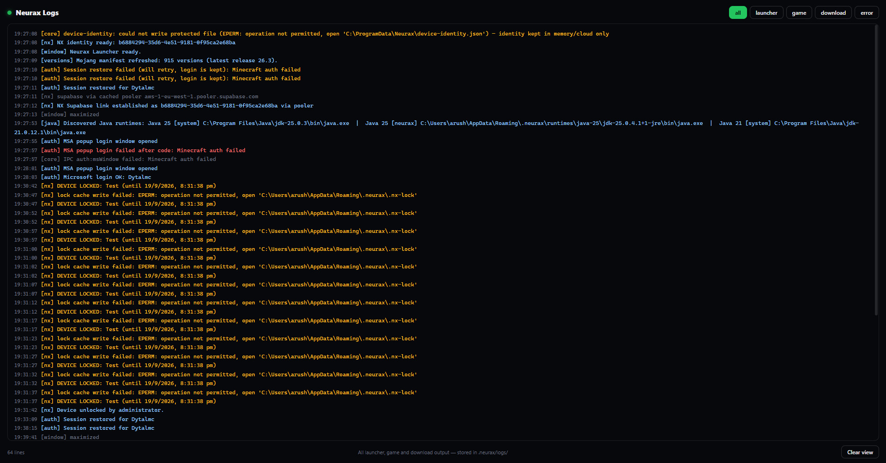

One-Click Play
A big PLAY button plays the selected instance — or any base version you picked. Worlds, libraries, assets and saves live in one shared global .minecraft folder.
v1.0.0 Open Source MIT License No telemetry
NeuraX Launcher plays every Minecraft version ever released, installs Fabric, Forge, NeoForge and Quilt for you, has the whole Modrinth catalogue built in, and runs real Minecraft servers with a live console — all in one clean, free, open-source app for Windows 10 & 11.

Everything is real
No simulations, no fake progress bars — real Mojang manifests, real official installers, real APIs. Here is what ships in v1.0.0.
A big PLAY button plays the selected instance — or any base version you picked. Worlds, libraries, assets and saves live in one shared global .minecraft folder.
Releases, Snapshots, Beta and Alpha — the full Mojang manifest, searchable and grouped. New Minecraft versions appear automatically on startup.
Vanilla, Fabric, Forge, NeoForge and Quilt instances. Forge and NeoForge install through their official installers and launch with a fully merged version JSON.
Create instances with name, version, loader, loader version and memory. Each instance gets its own worlds, mods and resource packs. Click to select, double-click to edit.
A full storefront mirroring modrinth.com — search with filters, project pages, galleries, and installs of any file version of mods, resource packs, shaders and .mrpack modpacks. No API key needed.
Paper, Vanilla, Fabric, Forge, NeoForge, Quilt and Spigot servers with start/stop, a live console for commands, a file inspector and an NBT explorer for level.dat.
A device code appears, your browser opens, you type the code — done (XBL → XSTS → Minecraft services). Offline mode included; tokens are encrypted with Windows DPAPI.
NeuraX detects every common Java install — and if none fits, it downloads the correct Temurin runtime (Java 8 / 16 / 17 / 21 / 25) for your Minecraft version automatically.
Connect your own Supabase database for an in-launcher ANNOUNCEMENTS tab with a 1-minute auto refresher, cloud chat, invites and 3D skin heads — with offline grace when the cloud is away.
Four instant themes (Emerald, Orange, Purple, Cyan), a separate filterable logs window, smooth animations — and never a terminal window. Every process runs hidden.
See it before you run it
Real captures of NeuraX 1.0.0 — click any image to enlarge. More on the screenshots folder on GitHub.









Up and running in a minute
Grab NeuraX-Launcher-1.0.0.exe from the official GitHub release — the only place you should ever download NeuraX from.
Choose installer or portable. SmartScreen may ask on first run because the app is new and open source — click “More info → Run anyway”.
Sign in with Microsoft (or use offline mode), pick or create an instance, hit PLAY. Java installs itself if you need it.
Good to know
NeuraX Launcher is a free, open-source Minecraft launcher for Windows. It launches every Minecraft version ever released, installs the Fabric, Forge, NeoForge and Quilt mod loaders for you, includes the Modrinth catalogue, and can create and run real Minecraft servers — all from one clean desktop app.
Yes. NeuraX Launcher is 100% free — no ads, no accounts, no telemetry — and the full source code is published on GitHub under the MIT license, owned by Anish Sandeep Bhargav (Dytalmc).
Every version Mojang ever published: all releases, all snapshots, plus Beta and Alpha. The version manifest refreshes automatically, so new Minecraft versions show up on their release day without updating the launcher.
Yes — one-click Microsoft login: a device code appears in the launcher, your browser opens automatically, you approve, and the launcher completes the login by itself. Offline mode is included too. Login tokens are stored encrypted with Windows DPAPI and never leave your PC.
Yes. NeuraX Launcher 1.0.0 targets 64-bit Windows 10 and Windows 11, ships as a windowed .exe with no console windows, and remembers your window size. There is no terminal to fight with, ever.
No. NeuraX auto-detects every common Java installation (Program Files, Adoptium, Corretto, Zulu, BellSoft and more). If nothing suitable is found, it downloads the correct Temurin runtime — Java 8, 16, 17, 21 or 25 depending on your Minecraft version — automatically.
Yes — the Modrinth storefront is built right in. Search with filters (type, loader, category, game version), open project pages, and install any specific file version of mods, resource packs, shaders or .mrpack modpacks into any instance, the global folder, or a brand-new instance created right in the install dialog.
Yes. Create Paper, Vanilla, Fabric, Forge, NeoForge, Quilt or Spigot servers with name, version, memory, port and MOTD. Start and stop them from the launcher, send commands through the live console, edit files with the auto-saving inspector, and tweak level.dat values in the NBT explorer.
Free forever. Open source under the MIT license. No ads, no accounts, no telemetry — just Minecraft.
Always download NeuraX only from dytalmc.github.io or the official GitHub repository — nowhere else.
By a player, for players
NeuraX Launcher is an open-source project created and maintained by Anish Sandeep Bhargav, known in Minecraft as Dytalmc. Every line of the launcher lives in a public GitHub repository — you can read it, learn from it, report issues and contribute. Nothing is hidden, and nothing phones home: the launcher contains no analytics and no tracking of any kind.
The project is released under the permissive MIT License, and the whole NeuraX ecosystem — launcher, website, releases and screenshots — is hosted openly on GitHub. If you like it, starring the repository is the best way to support it.